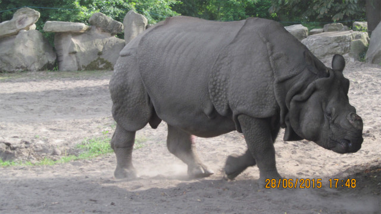

Nosorożec

Nosorożcowate, nosorożce – rodzina dużych ssaków z rzędu nieparzystokopytnych.
CIEKAWOSTKI
Największy gatunek nosorożca to nosorożec biały. Rośnie on do 3,7-4 metrów długości i do 1,8 metra od kopyta do ramienia. Waży około 2300 kilogramów. Oto ciekawostki o nosorożcach.
1. Na naszej planecie żyje pięć gatunków nosorożców. Nosorożec czarny i biały, które żyją w Afryce, oraz nosorożec sumatrzański, jawajski i indyjski, które zamieszkują lasy tropikalne i bagna Azji.
2. Nazwa białego nosorożca pochodzi prawdopodobnie od holenderskiego słowa „wijd” oznaczającego szeroko, które odnosi się do szerokiego pyska zwierzęcia, podczas gdy czarny nosorożec został nazwany tak, aby odróżnić go od białego nosorożca. Proste.
3. Nosorożec biały jest uważany za drugiego największego ssaka lądowego, zaraz po słoniu.
4. Najmniejszy gatunek nosorożca to nosorożec sumatrzański. Rośnie do do 2,5-3 m długości i do 1,5 metra od kopyta do łopatki. Nosorożec sumatrzański waży około 800 kg.
5. Pomimo swoich ogromnych rozmiarów i siły, te nieporęczne bestie nie żerują na innych zwierzętach w poszukiwaniu pożywienia.
6. W stosunku do dużych rozmiarów ciała, nosorożec ma mały mózg.
7. Szacuje się, że na wolności żyje 20 tysięcy południowych nosorożców białych, z czego ponad 90 procent znajduje się w Republice Południowej Afryki.
8. Nosorożce białe i czarne żyją na użytkach zielonych i terenach zalewowych wschodniej i południowej Afryki.
9. Rogi nosorożca są wykonane z białka zwanego keratyną, tej samej substancji, z której wykonane są paznokcie i włosy.
10. Nosorożec jest roślinożercą.
11. Szacuje się, że na wolności pozostało tylko około 29 tysięcy nosorożców, w porównaniu z 500 tysiącami na początku XX wieku. Głównym zagrożeniem dla tych pięknych zwierząt jest nielegalne polowanie, głównie dlatego, że ich rogi są używane w tradycyjnej medycynie ludowej, szczególnie w Azji. Nie ma on jednak żadnych właściwości medycznych, mimo że jest stosowana w tradycyjnej medycynie azjatyckiej.
12. Nosorożce w większości przypadków są samotnymi zwierzętami i lubią unikać siebie nawzajem. Niektóre gatunki, zwłaszcza nosorożec biały, mogą jednak żyć w grupie.
13. Zwierzęta te mają fantastyczny słuch i wspaniały zmysł węchu, ale mają kiepski wzrok. Trudno im będzie dostrzec coś dalej niż 30 metrów.
14. Nosorożce spędzają dni i noce na pastwiskach i śpią tylko w najgorętszych momentach dnia. W rzadkich okresach, kiedy nie jedzą, można je znaleźć taplającymi się w chłodnym błocie.
15. Nosorożec biały, pomimo swojej nazwy, jest w rzeczywistości szary.
16. Trzy z pięciu gatunków nosorożców są wymienione jako krytycznie zagrożone.
17. Ze względu na swoje ogromne ciała, silne rogi i grubą, pancerną skórę, nosorożce nie mają naturalnych drapieżników. Kiedy czują się zagrożone, instynktownie szarżują bezpośrednio na to, co je wystraszyło.
18. Nosorożce kochają pływanie. Pokrywając się błotem i pozwalając mu wyschnąć, chronią swoją skórę przed słońcem. Nosorożce pocierają swoje ciała o pnie drzew i skały, aby usunąć pasożyty, które utknęły w suchym błocie na ich skórze.
19. Zwierze te ma grubą, ochronną skórę.
20. Robi ich rosną przez całe życie, tak jak nasze własne paznokcie i włosy. Jeśli róg odpadnie, na jego miejscu wyrośnie kolejny.